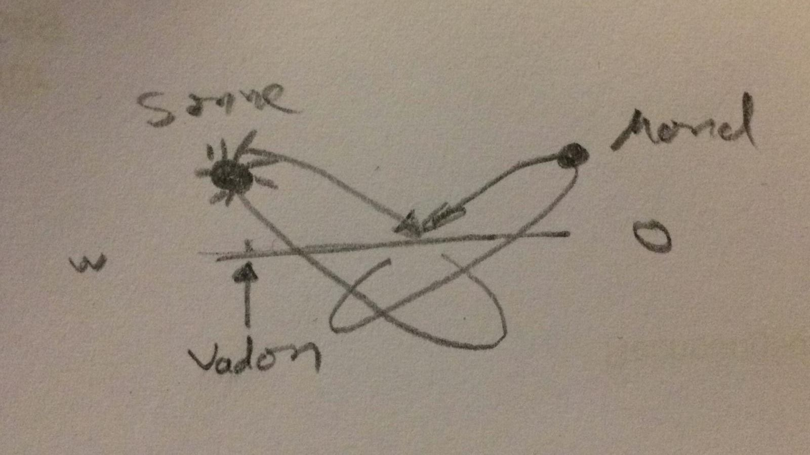

- Suruthua ist eine Scheibe (mit der Gravitation im Inneren und daher von beiden Seiten bewohnbar?)
- Eine Sonne und ein Mond rotieren um die Scheibe.
- Am Rand der Scheibe wächst eine unüberquerbare Gebirgskette empor und verhindert so den Kontakt zwischen den beiden Seiten.
- Keine der Landmassen ist mit dem Grenzgebirge verbunden
- Daher weiß die eine Seite nicht von der Existenz der zweiten Seite.
- können nicht auf die andere Seite
- (Flora und Fauna auf beiden Seiten dieselbe)?
Sonne
- blauer Riese
- kreist auf einem ovalförmigen Ring um die Scheibe
- (deutlich größerer Radius als der Mond)
- geringster Abstand zur Scheibe bei
Vadon
- größter Abstand bei den
Draskenlanden/Illoda
Mond
- keist relativ nahe um die Scheibe, daher groß zu sehen
- besitzt eine steinige und zerklüftete Oberfläche aus rotem Gestein
- Flüsse und Seen aus lila Flüssigkeit überfluten ihn